01
擴展實境
XR & IMMERSION
AR / VR / MR / XR 數位內容，以沉浸體驗連結虛擬與真實。
我們相信，好的互動不只發生在螢幕上，
更發生在人與世界之間。
YunTech HCI LAB 致力於互動技術鑽研，以遊戲設計、虛擬實境、擴增實境與機電整合為主軸，探索人與機器的互動關係。以人文與數位設計為立基，整合機台與數位遊戲，創造不同的遊戲體驗。
We explore the space between people and technology. Through game design, extended reality and mechatronics, we bring a human perspective to digital experiences.
XR & IMMERSION
AR / VR / MR / XR 數位內容，以沉浸體驗連結虛擬與真實。
GAME & PLAY
2D / 3D 遊戲開發、遊戲美術與互動，讓創意成為可玩的體驗。
HUMAN & INTERFACE
輸入裝置開發、遊戲機台與機電整合，探索互動的新形式。
SECURITY & TRUST
資訊隱藏、可逆式資訊隱藏與加密影像研究。
02 / EXPERIMENTS & EXPLORATIONS
在實作中提問，在體驗中尋找答案。
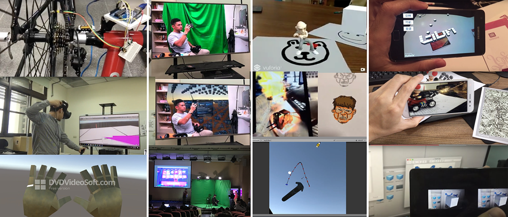
EXPLORATION / 01
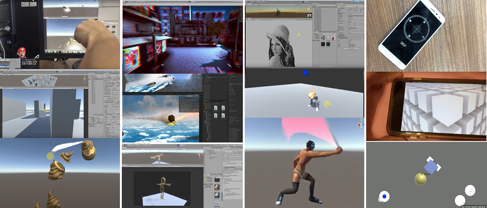
EXPLORATION / 02
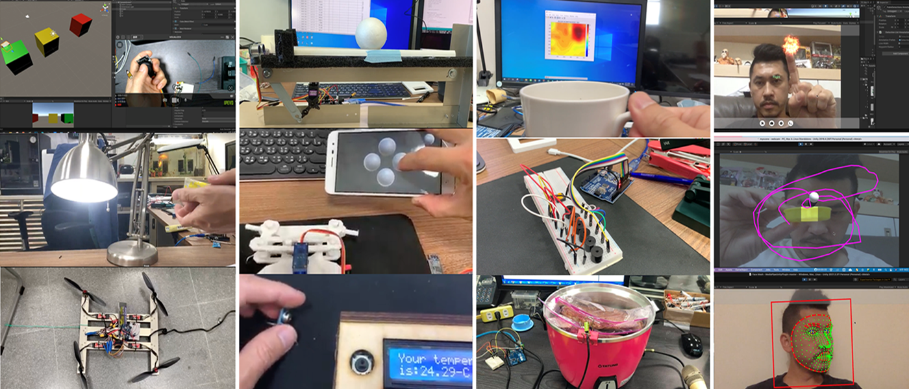
EXPLORATION / 03
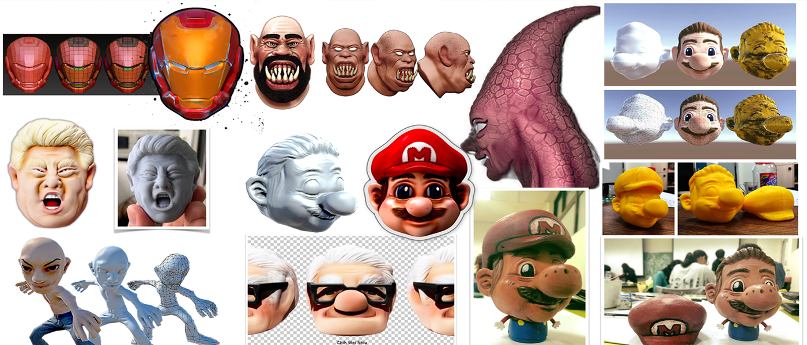
EXPLORATION / 04
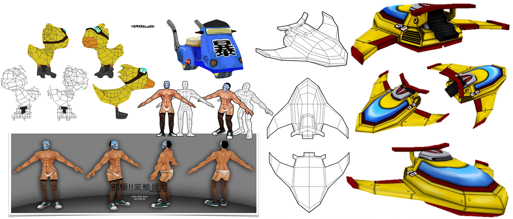
EXPLORATION / 05
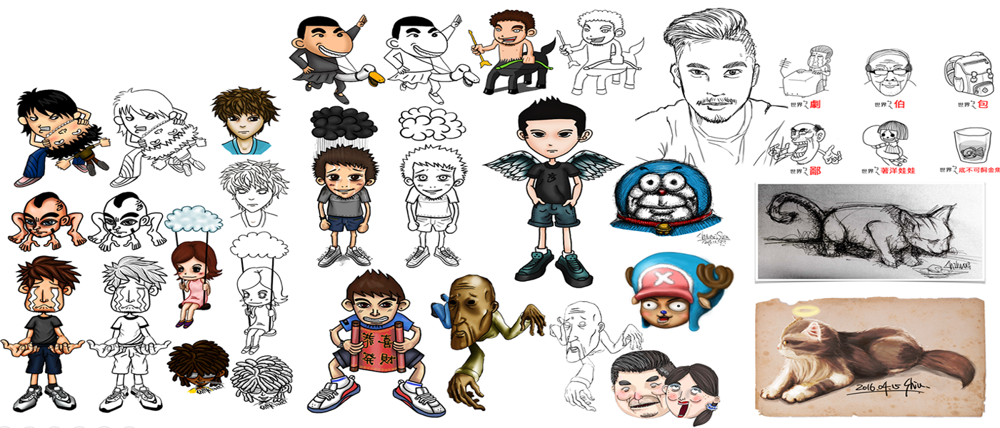
EXPLORATION / 06
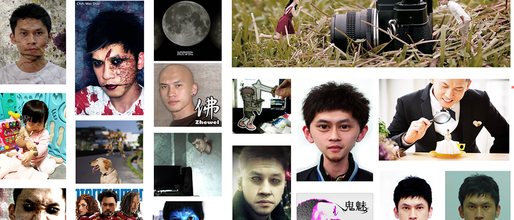
EXPLORATION / 07
03 / PEOPLE BEHIND THE IDEAS
-數位媒體設計．美術- 電腦繪圖、影像處理、遊戲企劃、次世代遊戲建模、公仔列印
-數位媒體設計．程式- AR/VR/MR/XR互動程式開發、多人連線程式開發、遊戲設計、人機互動開發
-資訊安全- 資料隱藏、可逆式資訊隱藏、可逆式資訊隱藏於加密影像
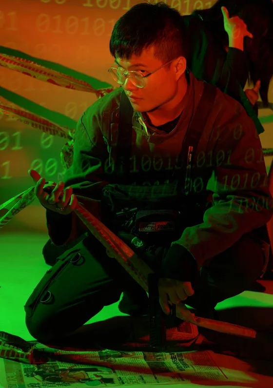
114級-在職碩專班
Tang Yun
數學與資訊教育、Unity、Blender、網路連線互動遊戲、影像剪輯
論文題目：虛擬校園連線遊戲體驗透過社會臨場感對學校認同感之影響—以臺灣師範大學附屬高級中學為例
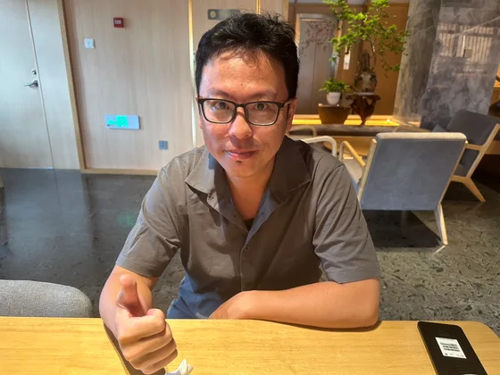
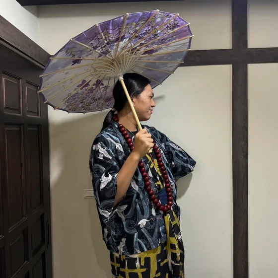
113級-互動媒體組
Cheng-Wei Wong
Unity、程式設計、遊戲企劃、關卡設計、3D建模
論文題目：虛擬實境中生成式 AI 對話輔助對社交焦慮傾向者之影響：以認知卸載與自我聚焦為觀點
112級-互動媒體設計組
Hsin-Yu Chiu
產品設計、產品企劃/開發/整合、3D建模、影像剪輯
論文題目：基於設計學習情境的人工智慧工具依賴性對設計學生批判性思維的影響
111級-互動媒體設計組
Ting-I HO
遊戲企劃、遊戲腳本劇情撰寫、Unity遊戲設計開發、Unity遊戲程式、電腦繪圖
論文題目：以VR虛擬實境社會實驗遊戲體驗校園霸凌探討其影響之研究
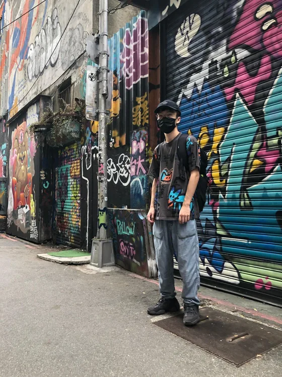
112級-陸生
Qi-Hui Tian
unreal地編，unreal藍圖，c語言，遊戲內容設計
論文題目：探討虛擬實境互動程度對狩獵文化傳承應用的科技接受度和認知負荷之影響
112級-互動媒體設計組
Xin-Kai Lin
3D建模、 影片與平面拍攝、影像剪輯與調色、PR/AI/PS、Unity、空拍機
論文題目：探索AI協作與人類創造力的差異：基於抽象與具象尺度問題的創造力評估
111級-臺東大學數媒系（共同指導）
Kai-Wen Lin
UNITY、3D建模、PS
碩士論文題目：將虛擬實境融入在地文化體驗-以卑南族南王部落會所文化體驗APP為例
YOUR NEXT CHAPTER
不限大學部或研究所、不限專長。只要喜歡動手實作、保持學習熱誠，歡迎加入。
04 / RESEARCH & IMPACT
C.W. Shiu, K.W. Lin “Preserving Indigenous Heritage through VR: Design and Implementation of a Virtual Puyuma Nanwang Youth Assembly House,” 2026 10th International Conference on Artificial Intelligence and Virtual Reality, AIVR 2026, Kobe, Japan,Accepted(EI)
M.L. Lai, C.W. Shiu “Walking-Based Interactive Control Iteration Guided by UX Hypotheses: Comparing Three Body-State Control Models,” 2026 IEEE 12th International Conference on Applied System Innovation, ICASI 2026, Kyoto, Japan, Accepted(EI)
C.W. Shiu, Q.H. Tian “Developing a Virtual Reality Serious Game to Preserve the Hunting Culture of the Puyuma Tribe,” 14th International Conference on Networks, Communication and Computing, ICNCC 2025, Fukuoka, Japan, Accepted(EI)
X.K. Lin, C.W. Shiu, N.Y. Pai “Application of ChatGPT-Integrated NPCs to Enhance Virtual Reality Brainstorming,” 2024 IEEE 13th Global Conference on Consumer Electronics, GCCE 2024, Fukuoka, Japan, Accepted(EI)
C.W. Shiu*, W. Hong, J. Chen, T.S. Chen, W.Y. Ji “Data Hiding for Color Image by Rubik's Cube,” Third International Conference on Cyber Security of Smart Cities, Industrial Control System and Communications(SSIC 2018)
W. Hong, J. Chen, M.C. Wu, and C.W. Shiu, “A Secure Data Hiding Method Based on Preservation of Saturated Pixels,” in Proceedings of The 2012 International Conference on Digital Image Processing (ICDIP 2012), Jan. 10, 2012. (EI)
W. Hong, T.S. Chen, and C.W. Shiu, “A Minimal Euclidean Distance Searching Technique for Sudoku Steganography,” in Proceedings of International Symposium on Information Science and Engineering (ISISE 2008), Shanghai China, vol. 1, pp. 515-518, Dec. 2008. (EI, Times cited=54)
W. Hong, T.S. Chen, and C.W. Shiu, “Reversible Data Hiding Based on Histogram Shifting of Prediction Errors,” in Proceedings of International Symposium on Intelligent Information Technology Application (IITA 2008), Shanghai China, pp. 292-295, Dec. 2008. (EI)
W. Hong, T.S. Chen, and C.W. Shiu, “Steganography Using Sudoku Revisited,” in Proceedings of International Symposium on Intelligent Information Technology Application (IITA 2008), Shanghai China, vol. 2, pp. 935-939, Dec. 2008. (EI)
W. Hong, T.S. Chen, and C.W. Shiu, “A High Quality Histogram Shifting Based Embedding Technique for Reversible Data Hiding,” in Proceedings of The International Conference on Intelligent Systems Design and Applications. (ISDA 2008), Kaohsiung Taiwan, vol. 3, pp 183-187, Nov. 2008. (EI)
Y.T. Liu, W. Tarng, C.M. Lin, T.C. Fan, K.Y. Pan and C.W. Shiu , “The Development of a Virtual Synchrotron Light Source for Educational Applications,” in Proceedings of the Third IASTED International Conference on Applied Simulation and Modeling.(ASM2008, EI), Corfu, Greece (EI)
W. Hong, T.S. Chen, and C.W. Shiu, “Lossless Steganography for AMBTC- Compressed Images,” in Proceedings of Congress on Image and Signal Processing, (CISP 2008), Hainan China, vol. 2, pp. 13-17, May 2008. (EI, Times cited=51)
Y.C. Chen, and C.W. Shiu, “Distributed Encrypted Image-Based Reversible Data Hiding”, Journal of Internet Technology, vol. 22, no. 1, pp. 101-107, 2021. (SCI, IF=0.786)
C.W. Shiu, J. Chen and Y.C. Chen, “Low-Cost Online Handwritten Symbol Recognition System in Virtual Reality Environment of Head-Mounted Display”, Mathematics, vol. 8, no. 11, pp. 1967, 2020. (SCI, IF=1.747)
Y.C. Chen, T.H. Hung, S.H. Hsieh, C.W. Shiu, “A New Reversible Data Hiding in Encrypted Image Based on Multi-Secret Sharing and Lightweight Cryptographic Algorithms,” Transactions on Information Forensics and Security, vol. 14, no.12, pp. 3332-3343. (SCI, IF= 6.211, Times cited=10).
C.W. Shiu*, Y.C. Chen, Wien Hong, “Reversible Data Hiding in Permutation-Based Encrypted Images with Strong Privacy, ” KSII Transactions on Internet and Information System, vol. 13, no. 2, pp. 1020-1042, 2019.(SCI, IF= 0.71)
C.W. Shiu, Y.C. Chen, and Wien Hong, “Encrypted Image-based Reversible Data Hiding with Public Key Cryptography from Difference Expansion,” Signal Processing: Image Communication, vol. 58, no. 10, pp. 2583-2594. (SCI, IF =2.814, Times cited=89)
W. Hong, G. Horng, C.W. Shiu, T.S. Chen, and Y.C. Chen, “Reversible Data Hiding Method Using Complexity Control and Human Visual System,” The Computer Journal, vol. 58, no. 10, pp. 2583-2594, 2015(SCI, IF =0.98)
Y.C. Chen, C.W. Shiu, and G. Horng, “Encrypted Signal-Based Reversible Data Hiding with Public Key Cryptosystem,” Journal of Visual Communication and Image Representation, vol. 25, no. 5, pp. 1164-1170, 2014. (SCI, IF =2.259, Times cited=120)
J. Chen, T.S. Chen, W. Hong, G. Horng, H.Y. Wu, and C.W. Shiu, “A New Reference Pixel Prediction for Reversible Data Hiding with Reduced Location Map,” KSII Transactions on Internet and Information Systems, vol. 8, no. 3, pp. 1150-1118, 2014. (SCI, IF =0.71)
J. Chen, C.W. Shiu and M.C. Wu, “An Improvement of Diamond Encoding Using Characteristic Value Positioning and Modulus Function,” Journal of Systems and Software, vol. 86, no. 5, pp. 1377-1383, 2013. (SCI, IF =2.559)
J. Chen, W. Hong, C.W. Shiu, D.C. Lou, C.C. Lee and J.L. Liu, “Prediction Error Adjustment Technique for High Quality Reversible Data Hiding,” International Journal of Innovative Computing, Information and Control, vol. 9, no. 2, pp. 611-623, 2013. ( EI)
C. L. Pan, W. Hong, T.S. Chen, J. Chen, and C.W. Shiu, “Multilevel Reversible Data Hiding Using Modification of Prediction Errors,” International Journal of Innovative Computing, Information and Control, vol. 7, no. 9, pp. 5107-5118, Sep. 2011 ( EI)
W. Hong, J. Chen, T.S. Chen, and C.W. Shiu, “Steganography for Block Truncation Coding Compressed Images Using Hybrid Embedding Scheme,” International Journal of Innovative Computing, Information and Control, vol. 7, no. 3, 11 pages, 2011. ( EI)
W. Hong, T.S. Chen, C.W. Shiu, and M.C. Wu, “Lossless Data Embedding in BTC codes Based on Prediction and Histogram Shifting,” Applied Mechanics and Materials, vol. 65, pp. 182-185, 2011. (EI)
W. Hong, T.S. Chen, Y.P. Chang, and C.W. Shiu, “A High Capacity Reversible Data Hiding Scheme Using Orthogonal Projection and Prediction Error Modification,” Signal Processing, vol. 90, pp. 2911-2922, 2010. (SCI, IF=4.086, Times cited=101)
J. Chen, W. Hong, T.S. Chen, and C.W. Shiu, “Steganography for BTC Compressed Images Using No Distortion Technique,” The Imaging Science Journal, vol. 58, pp. 177-185, 2010. (SCI, IF=0.846, Times cited=56)
W. Hong, T.S. Chen, and C.W. Shiu, “Reversible Data Hiding for High Quality Images Using Modification of Prediction Errors,” The Journal of Systems and Software, vol. 82, pp. 1833-1842, 2009. (SCI, IF=2.559, Times cited=301)
Yun Tang,C.W. Shiu, “A Study on the Relationship between Virtual Campus Game Experience Social Presence and School Identity: The Case of the HSNU 79th Anniversary Game,” The 13th International Design Studies Forum and Conference & Integration Design Workshop, IDSFC 2026, Yunlin, Taiwan
陳畇蓁, 吳玟萱, 黃湘妮, 張宸瑄, 許志維, 白乃遠 “音樂節奏遊戲〈咪瞇貓貓 Catous〉互動設計與實作, ” 2025 第18屆 智慧 × 永續暨台灣數位媒體設計國際研討會，台灣，2025
陳畇蓁, 吳玟萱, 黃湘妮, 張宸瑄, 許志維, 白乃遠 “音樂節奏遊戲〈咪瞇貓貓Cataos〉 3D場景美術設計, ” 2025 第18屆 智慧 × 永續暨台灣數位媒體設計國際研討會，台灣，2025
林啟文, 許志維, 楊晰勛, 黃國豪 “沉浸體驗問卷於桌上型角色扮演遊戲之應用, ” 2025 第18屆 智慧 × 永續暨台灣數位媒體設計國際研討會，台灣，2025
田啟輝, 許志維, 邱心妤 “開發虛擬實境狩獵文化保存嚴肅遊戲之實作報告, ” 2024第十七屆台灣數位媒體設計學會國際研討會，台灣，2024
何亭儀、許志維，“運用AIGC於美術與程式設計：以流浪狗視角為故事的2D橫向卷軸冒險遊戲研究與製作 ，”2024科技、藝術與社會變遷：多媒體的創新和挑戰，台灣，2024
林新凱、白乃遠、盧麗淑、許志維、田啟輝，“生成式AI虛擬實境腦力激盪應用-關鍵功能之前置研究，”2024跨域創新設計整合國際研討會，台灣，2024
吳京華，許志維 “數位化課程對幼兒自我認同提升之探究, ” 2022 台灣感性學會暨 台灣數位媒體設計學會國際研討會，台灣，2022
林杏儒，黃韵茹，王秀文，許志維，張嘉玲 “AR遊戲導入生態環境教育之應用─以臺灣常見外來種保育為例, ” 2019學術研討會：AI在教育科 技的應用與實踐，台灣，2019
黃姿樺，楊理鈞，吳翎華，許志維“救救亞當-以細懸浮微粒(PM2.5)為主題的遊戲機台製作及研究,” 2017台灣感性研討會, 台灣,2017
陳彥霖，林詩庭，蘇詠茹，許志維“述日-青少年心理互動遊戲,” 2017台灣感性研討會, 台灣,2017
李宜亭，賀俊智，許志維，蔡子瑋“互動裝置遊戲融合智慧醫療復健系統-熱氣衝飛”, 2017台灣感性研討會, 台灣,2017
許睿中，許志維， 洪國寶，“基於預測誤差值修改的隨機嵌入制機之可逆式資訊隱藏技術,” 2011數位內容與多媒體應用研討會, 2011
洪國寶，李振祥，許志維“植基於統計分析之資訊隱藏技術,” 資訊管理及應用國際研討會, 2010
洪國寶，曹憲中，許志維“植基於適應性亂數之資訊隱藏技術,” 資訊科技應用學術研討會, 2009
潘哲倫，許俊傑，洪維恩，紀萬益，許志維 “植基於長條圖修改之高品質無失真資訊隱藏技術,”資訊管理與數位內容研討會-宅經濟下的數字應用(IMDC 2009)。
C.L. Liu, C.C. Lee, D.C. Lou, W. Hong, J. Chen, C.W. Shiu, “Reversible Data Hiding Using High-Peak Prediction Errors,” Workshop on Consumer Electronics, Nov. 2009. (最佳論文獎)
W. Hong, C.W. Shiu and T.S. Chen, “Efficient Data Hiding for AMBTC-Compressed Images,” The 21th IPPR Conference on Computer Vision, Graphics, and Image Processing. (CVGIP2008)
洪維恩，蔡雅純，許志維，黃為亮“資訊影藏運用於文字圖像之研究”資訊管理及應用國際研討會2008
洪維恩，許志維“無須搜尋之碎形影像技術應用於數位浮水印研究”，The 19th International Conference on Information Management 2008 (ICIM 2008)
洪維恩，許志維，蔡雅純“灰階碎形影像與隱像術之研究”，International Conference on Advanced Information Technologies 2007 (AIT2007)
許志維，洪維恩，蔡雅純 “3D遊戲夢想家-VIRTOOLS 4.0入門實作範例 第二版（3d程式設計用書）, ” ISBN:9789868442177，藍海文化
洪維恩，蔡雅純，許志維 “3D遊戲夢想家-VIRTOOLS入門實作範例（3d程式設計用書）, ” ISBN:9861492186，金禾出版社
澎湖海洋互動遊戲，委辦單位：鉅奇室內裝修有限公司，主持人
『校園防災之數位孿生計畫』-整合空間型構理論視野量化參數、三維空間雷射掃描、虛擬實境與擴增實境模擬於大學校園避難疏散空間風險評估模型之應用研究，補助單位：115年國科會專題研究，共同主持人，64.4萬（115-2410-H-224 -023 -）
社會力、策展力與影響力：台灣原住民地方文化館的社會支持系統與策展動能之研究計畫，補助單位：115年國科會專題研究，共同主持人，73萬（115-2420-H-224 -001 -）
115年「建置管制藥品暨藥物濫用防制網路遊戲教材研究計畫」，委辦單位：衛生福利部食品藥物管理署，共同主持人
基於遊戲化的虛擬朝聖系統：媽祖遶境文化的數位保存與創新，補助單位：114年國科會專題研究，主持人，138.8萬（114-2410-H-224-022-MY2 2年期計畫）
互動懷舊治療設計與研究，補助單位：114年國科會專題研究，共同主持人，171.5萬（NSTC 114-2410-H-224 -021 -MY2 2年期計畫）
整合AI、AR於遊戲化美學共創以促進創意老化- 以雲林縣斗六市社區老人為範疇(I)，補助單位：114年國科會專題研究，共同主持人，65.6萬（NSTC 114-2410-H-224-020- ）
ACG：斗南小鎮文化創生新引擎，補助單位：教育部大學社會責任計畫(USR 114-116)，協同主持人
從在地到國際之跨域共創與社會實踐-建構Beyond AI 之韌性原民族群社會--台東南王部落狩獵文化的AR/VR數位典藏：保存、紀錄與推廣(2/2)，補助單位：114年國科會專題研究，主持人，73.8萬（專案型多年期計畫第二期 114-2420-H-224 -004 -）
從在地到國際之跨域共創與社會實踐-建構Beyond AI 之韌性原民族群社會--應用代間參與美學與社會設計以整合 AI 及 AR 擴增實境系統於愛蘭巴宰部落無牆博物館之建構(2/2)，補助單位：114年國科會專題研究，共同主持人，104.6萬（專案型多年期計畫第二期 114-2420-H-224 -001 -）
114年「建置正確使用鎮靜安眠藥網路遊戲教材計畫」，委辦單位：衛生福利部食品藥物管理署，共同主持人
臺南棒球展多媒體互動作製，委辦單位：鉅奇室內裝修有限公司，主持人
從在地到國際之跨域共創與社會實踐-建構Beyond AI 之韌性原民族群社會--台東南王部落狩獵文化的AR/VR數位典藏：保存、紀錄與推廣(1/2)，補助單位：113年國科會專題研究，主持人，64.9萬（專案型多年期計畫第一期 113-2420-H-224-006-）
從在地到國際之跨域共創與社會實踐-建構Beyond AI 之韌性原民族群社會--應用代間參與美學與社會設計以整合 AI 及 AR 擴增實境系統於愛蘭巴宰部落無牆博物館之建構(1/2)，補助單位：113年國科會專題研究，共同主持人，92.4萬（專案型多年期計畫第一期 113-2420-H-224-004-）
運用元宇宙跨越原住民會所的性別限制，補助單位：111年國科會專題研究，主持人，66.3萬（111-2410- H-143-021-）
職業計畫之虛擬實境教材製作師資人才培育計畫，補助單位：師資培育之大學領域教材教法人才培育計畫，協同主持人， 42萬
臺東Y計畫-共創部落好旅遊，補助單位：教育部大學社會責任計畫(USR)，協同主持人，450萬
攜手共創部落新「旅」力-山林部落見學旅遊模式建構，補助單位：教育部大學社會責任計畫(USR)，協同主持人，480萬
基於隨機排列加密之強私密可逆式資訊隱藏（106-2218-E-143-002-），補助單位：科技部專題研究，主持人，52.7萬
數位藝術與版權保護之探討，補助單位：中山大學南方學院（中國），主持人，10萬（人民幣）
國科會大專生計畫【完美主義下的自我救贖：以敘事遊戲《玩偶的夜班》探討自我差距與和解】林紫渝，115-2813-C-224-004-H
國科會大專生計畫【從數位抉擇看人際歸屬:以遊戲敘事體驗高中校園內的人際選擇與心理反饋】黃湘如，115-2813-C-224-007-H
放視大賞，A lovely night， PC與遊戲主機組，金獎，李承安
放視大賞，A lovely night， bitsummit參展資格，李承安
放視大賞，MIOMO，跨域組，入圍決選，葉俊沅、蘇筱瑩
放視大賞，尋常鼠鎮 Ordinary Mouston，PC與遊戲主機組，入圍複選，蔡瑩宜、黃淑怡
金點新秀贊助特別獎，MIOMO，數位互動設計類，入圍決選， 葉俊沅、蘇筱瑩
巴哈姆特，歡迎搭乘1320次列車，遊戲組，特別潛力獎，曾柏棟、朱庭緯、孫文杰、金慧欣
國科會大專生計畫【規則類怪談應用於恐怖類型數位遊戲製作】朱庭緯，計畫編號：113-2813-C-224-042-H，大專生研究創作獎
國科會大專生計畫【電子遊戲中之視覺特效的用色與形狀對於玩家的互動反應】王家恩，114-2813-C-224-049-H
國科會大專生計畫【模擬天災遊戲作為心靈療癒工具：探索災後心理復原與韌性的提升】蔡瑩宜，114-2813-C-224-047-H
放視大賞，焦焦事務所，跨域組，入圍複選，陳書逵、林圓晴、陳宜均、江易耘
放視大賞，歡迎搭乘1320次列車，PC遊戲組，入圍複選，曾柏棟、朱庭緯、孫文杰、金慧欣
放視大賞， 森之獵心者，PC遊戲組，入圍複選，楊昇樺、鄭郁穎
金點新秀設計獎，焦焦事務所，數位互動設計類，入圍，陳書逵、林圓晴、陳宜均、江易耘
金點新秀贊助特別獎，焦焦事務所，數位互動設計類，臺南創意新人獎，陳書逵、林圓晴、陳宜均、江易耘
金點新秀贊助特別獎，咪瞇貓貓，數位互動設計類，入圍，吳玟萱、黃湘妮、張宸瑄、陳畇蓁
放視大賞，必殺球，遊戲類-PC遊戲組/創意企劃組，銀獎，苟于泓
國科會大專生計畫【以數位遊戲引發民眾對街貓議題的認識與了解】黃湘妮，113-2813-C-224-041-H
國科會大專生計畫【規則類怪談應用於恐怖類型數位遊戲製作】朱庭緯，113-2813-C-224-042-H
創夢市集C-Lab 自製獨立遊戲產品孵化實驗室, 獲補C-Lab補助, 迴妖，賈晴雯、張婉慈、胡姿婷，業界導師：雷亞科技李勇霆
放視大賞，迴妖，遊戲類-PC遊戲組/創意企劃組，銅獎，賈晴雯、張婉慈、胡姿婷
巴哈姆特ACG大賽，迴妖，遊戲組，最佳2D美術，賈晴雯、張婉慈、胡姿婷
巴哈姆特ACG大賽，綻慾，遊戲組，入圍，李姿君、鄭育玟、蘇云昇
科技部大專生計畫【探討以霸凌為主題之劇情遊戲對玩家的省思與影響】110-2813-C-143-013-H
2021 A+大賞，菜雞巴拉巴巴拉, 台灣互動體驗設計協會特別獎, 林盈君、馮旻萱、李亭穎
台灣數位媒體設計獎競賽，菜雞巴拉巴巴拉, 數位遊戲，入圍, 林盈君、馮旻萱、李亭穎
巴哈姆特ACG大賽，菜雞巴拉巴巴拉，遊戲組，優選獎, 林盈君、馮旻萱、李亭穎
放視大賞，菜雞巴拉巴巴拉, 遊戲類-PC遊戲組/創意企劃組，入圍, 林盈君、馮旻萱、李亭穎，2021
放視大賞，心靈異途, 遊戲類-PC遊戲組/創意企劃組，入圍, 吳煜凌、曾子渝，2021
放視大賞，7.3, 遊戲類-PC遊戲組/創意企劃組，入圍, 梁惠雯、黃致維、陳品伃，2021
科技部大專生計畫【攝影機鏡頭語言應用於數位遊戲─以2D捲軸遊戲為例】林盈君，計畫編號：109-2813-C-143-027-H，大專生研究創作獎
放視大賞，With Me, 遊戲類－PC遊戲創作組，入圍第二階，鄭智維、陳曦、周芷寧，2020
放視大賞，霧霾戰爭, 遊戲類－PC遊戲創作組，入圍第二階，葉雲恩、呂曜憲、劉勵蓁，2020
放視大賞，Osmond, 遊戲類－PC遊戲創作組，入圍第二階，王梓、張祐榕、陳意文，2020
青春設計節，瓦德與阿齊, 互動科技與遊戲設計類 優勝獎, 張權仁、李新臺、鄭穎
放視大賞，瓦德與阿齊, 遊戲類-PC, 鈊象電子特別獎, 張權仁、李新臺、鄭穎
放視大賞，創意企畫類, 入圍第二階段, 方堉權、陳麒文、刁綺雁（VR遊戲）
放視大賞，藥點, 創意企畫類, 入圍第二階段, 賴盈廷、呂亭儀
放視大賞，哇！一點鐘, 2D動畫創作組, 入圍, 鄭鎔萱、鄭貽升
巴哈姆特ACG大賽，瓦德與阿齊, 遊戲組，入圍，張權仁、李新臺、鄭穎
創想星球資訊科技創意大賽，藥點, 數位影音組, 佳作, 賴盈廷、呂亭儀
學生三創競賽-東區，藥點，創新創意組, 佳作, 賴盈廷、呂亭儀
放視大賞, 愛在1960, 遊戲類VR組, 入圍, 王悅汝、黃儒玉、詹詠翔（VR遊戲）
放視大賞, 心迴之隅, 遊戲類PC組, 入圍, 陳彥霖、林詩庭、蘇詠茹
放視大賞, 哇！一點鐘, 2D動畫創作組, 入圍, 鄭鎔萱、鄭貽升
學生三創競賽-東區, 心迴之隅, 創新創意組, 佳作, 林詩庭、陳彥霖、蘇詠茹
科技部大專生計畫【空氣品質警告裝置「Adam」—以細懸浮微粒(PM2.5)為例】吳翎華，計畫編號：106-2813-C-143-010-H，大專生研究創作獎
科技部大專生計畫【蓋亞的贊禮──青少年自我認同之互動遊戲】106-2813-C-143-009-H
青春有影大學盃, 洛心, 百大精選名單, 入圍, 陳奕昀、鄭晴、林恩如
國際華文暨教育盃電子書創作大賽, 今天，人呢？, 原創組, 第四名, 黃婕、馬孟廷、楊宗達（AR互動電子書）
放視大賞, 熱氣衝飛, 跨領域類數位跨域組, 入圍, 張虔祥、李宜亭、鐘惠雯
放視大賞, 洛心, 動畫類-3D, 動畫創作組, 入圍, 陳奕昀、鄭晴、林恩如
微電影小確幸, 相煎何太急, 第3名, 連釗欣、李曼露、羅海旋
比亞迪定格綠未來定格動畫創作大賽, 垃圾獸, 全中國第2名, 何思穎、陳柳雲、莫林青
沒有符合的研究紀錄，請試試其他關鍵字。
05 / TEACHING & LEARNING
從設計思考到互動實作
{kind=link}
{kind=link}
{kind=link}
{kind=link}
{kind=link}
{kind=link}
{kind=link}